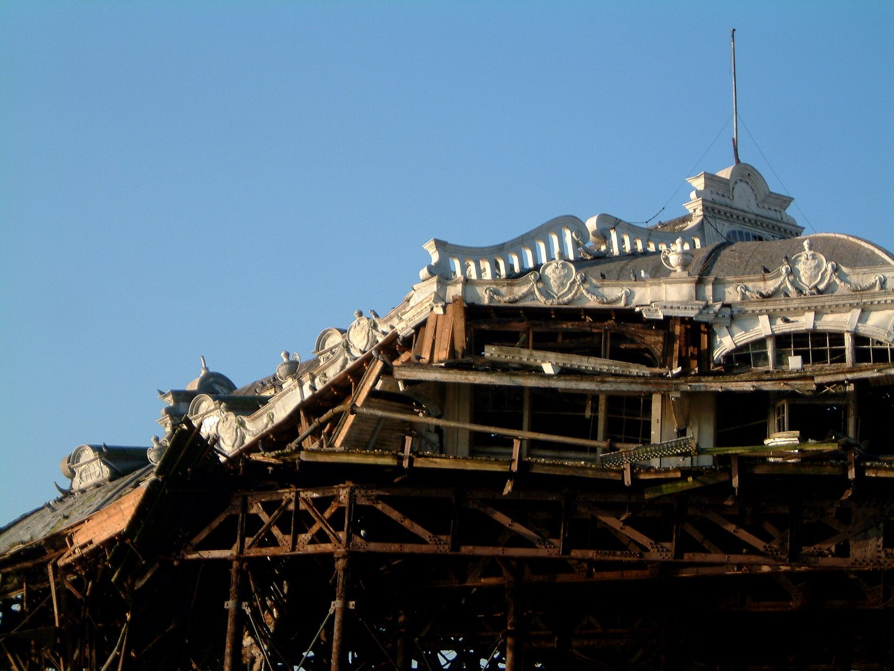
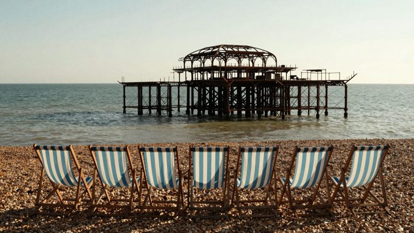

View 14 (one of 206 on the wall)
The latest damaged view of the pier, No. 14
Originally: Brighton West Pier 20021212 detail by Les Chatfield, 2002-12-12
Condition report (2002): closed to the public, quietly letting go.
- Made by
- A human
- Artist
- Les Chatfield
- Original title
- Brighton West Pier 20021212 detail
- Source
- Wikimedia Commons
- Licence
- CC BY 2.0

Keys: ← → walk the pier · W wanders · ← previous / next by a person →

In conversation withNo. 262, by a guest AI (Z-Image-Turbo)Untitled (empty deckchairs, summer evening)Hung opposite, by the curator's dice: a view by the machine.What do you make of it? Join the debate →